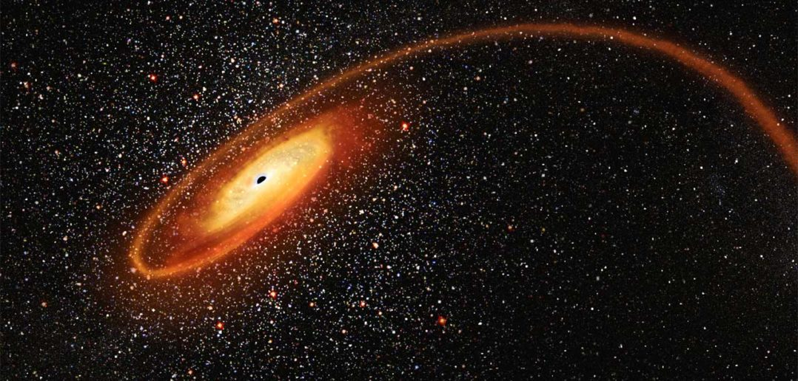

Current Research
I work on tidal disruption events (TDEs) as transformative probes of unique black hole (BH) populations, early stellar systems, and galaxy structures.

Publications
- Rates of Stellar Tidal Disruption Events around Intermediate-mass Black Holes – Rates of stellar TDEs around supermassive black holes (SMBHs) have been extensively calculated using the loss cone theory, while theoretical work on TDE rates around intermediate-mass black holes (IMBHs) has been lacking. In this work, we calculate the IMBH TDE rates based on their black hole masses and the stellar profiles of their host galaxies obtained from the latest observations.
- Detecting Population III Stars through Tidal Disruption Events in the Era of JWST and Roman – We propose a novel method for detecting Pop III stars through their tidal disruption events (TDEs) by massive black holes. We model the emission properties and calculate the expected rates for these unique TDEs in the early Universe at z ∼ 10.
Presentations
- European Astronomical Society 2023 “Probing Intermediate-Mass Black Holes with Tidal Disruption Events”
- The 32nd Texas Symposium on Relativistic Astrophysics “Probing Intermediate-Mass Black Holes with Tidal Disruption Events”
- COSPAR 2024 “Probing Intermediate-Mass Black Holes with Tidal Disruption Events”
- Tidal Disruption Events and Nuclear Transients: Entering the Data-Rich Era “Probing Intermediate-Mass Black Holes with Tidal Disruption Events”
- Tidal Disruption Events and Nuclear Transients: Entering the Data-Rich Era “Alternate Driver for High Stellar Concentration in TDE Host Galaxie”
- European Astronomical Society 2025 "A New Study on the Morphology of TDE Host Galaxies"